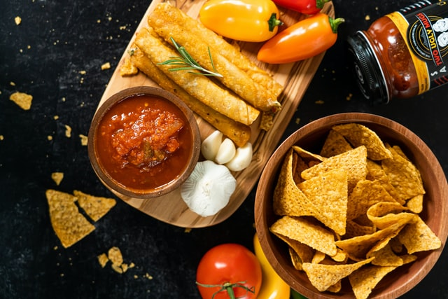

Classic Salsa Recipe

This classic salsa recipe pairs well with fresh chips!
This is an easy to follow recipe that relies on fresh ingredients. It takes about
15 minutes to prepare and another 15 minutes for the flavors to meld.
Ingredients:
- 1/2 of 1 Medium-sized Red Onion
- 2 cloves Garlic
- 1/2 of 1 Medium-sized Jalepeño (seeds included)
- 3 Whole Roma Tomatoes
- 1/4 Bunch of Fresh Cilantro (chopped fine)
- 1 Tbsp. White Vinegar
- 1/2 Lime (juiced)
- Salt & Freshly Ground Black Pepper (to taste)
- (Optional) 1 Tbsp. Chili Garlic Sauce

Steps:
- Finely dice your 1/2 red onion and add to a mixing bowl along with the tbsp. of white vingar. Stir to coat.
- While the onion 'sweats' in the vinegar, finely dice your garlic and jalepeño. Once cut up, add to mixing bowl with onion and stir to coat.
- Dice your tomato according to your preferences (chunky vs. fine). Add to the mixing bowl and stir to coat.
- Add lime juice, salt, and pepper to taste being mindful that your tortilla chips will also be salted.
- If you have chili garlic sauce, go ahead and add that now.
- Add your fresh cilantro and give it one last stir to fully integrate into your salsa.
Once you've completed the steps above, it's usually best to let sit for 15 minutes at room temperature to allow the flavors to blend together.
If the salsa is intended for a later time, then cover or store in a tupperware in the fridge. Fresh salsa usually lasts 48 hours before the vinegar begins
breaking it down too much. Enjoy!